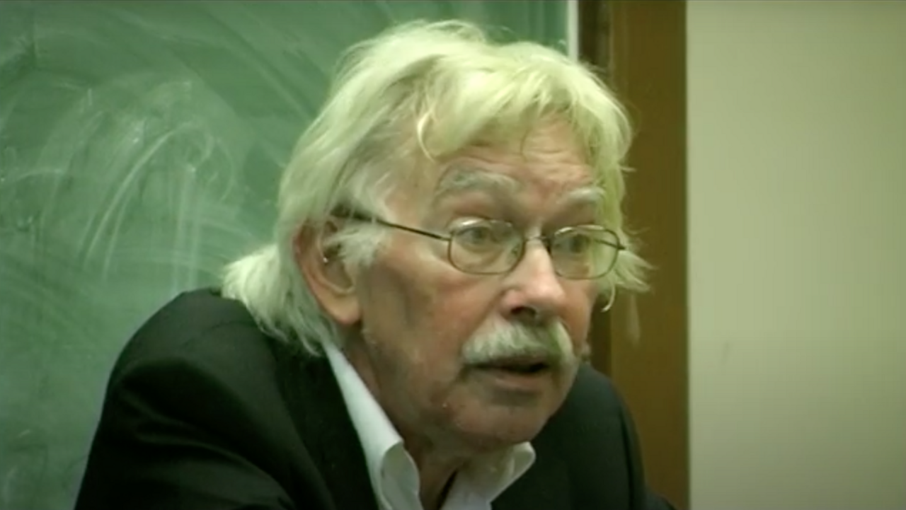
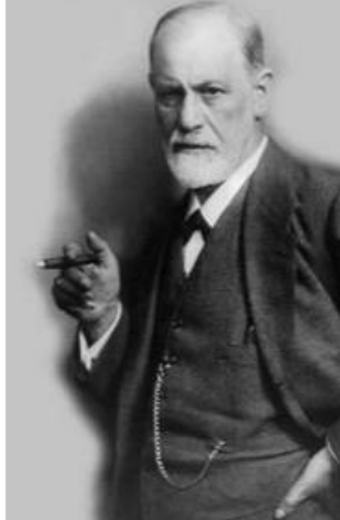
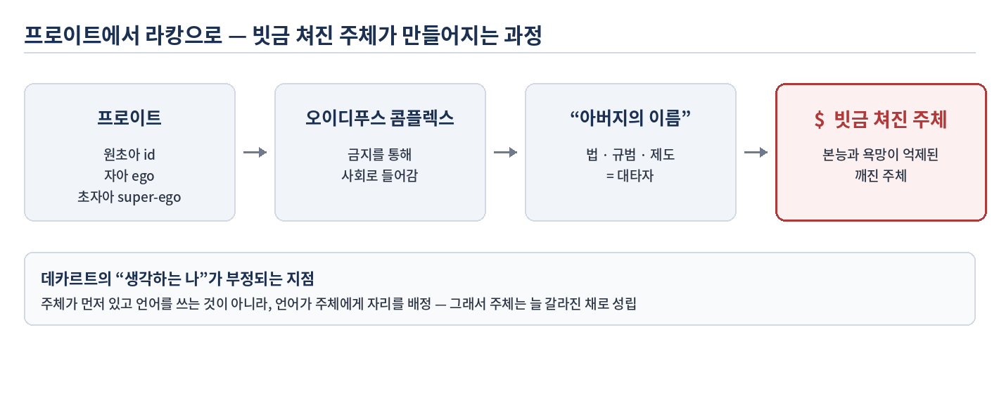
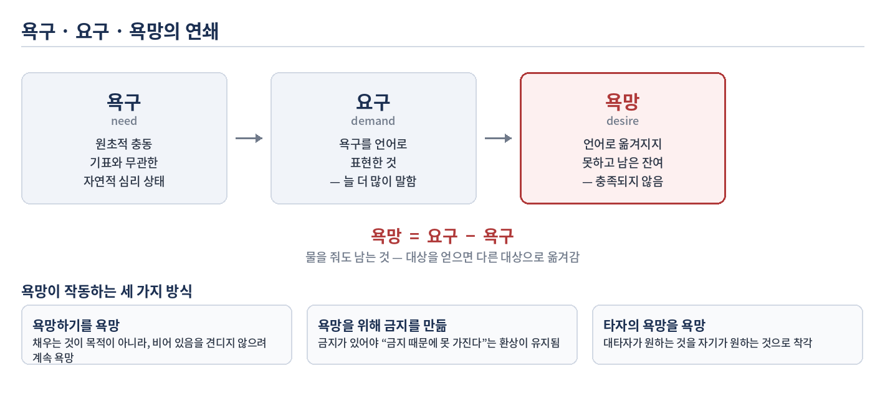
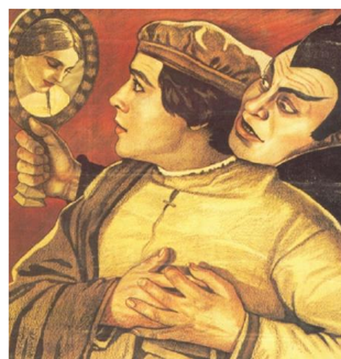
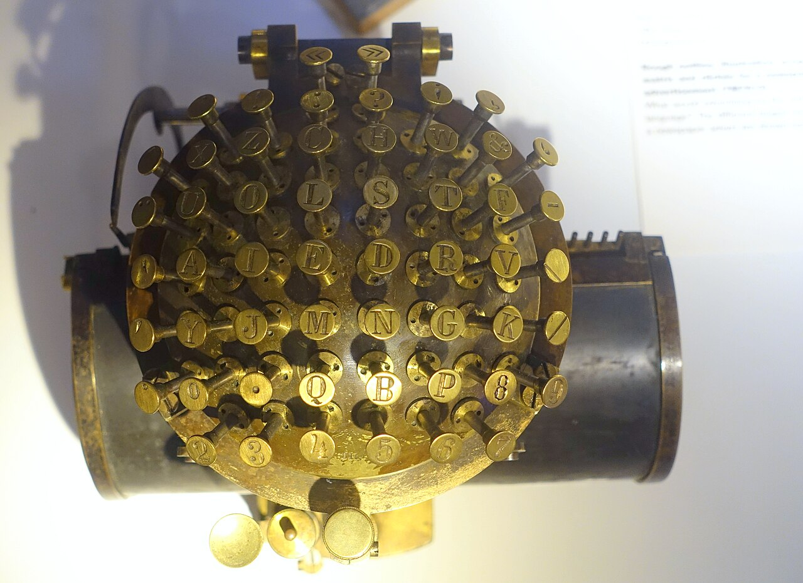
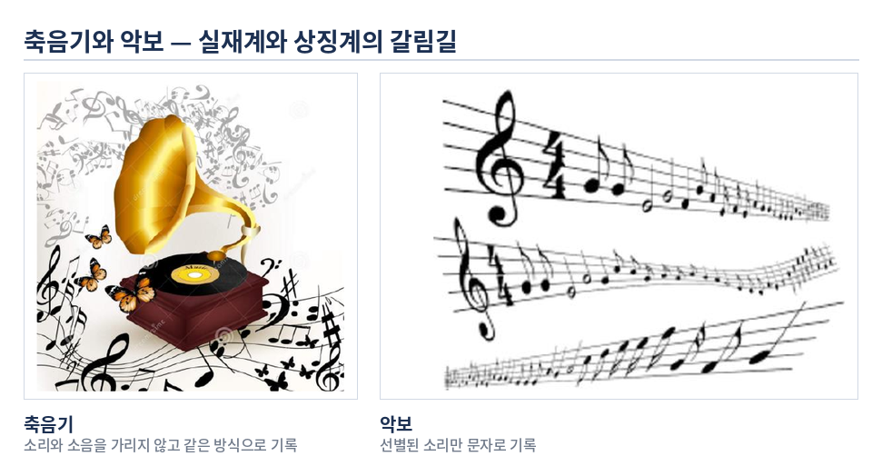
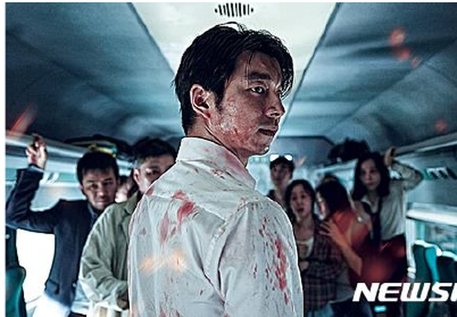
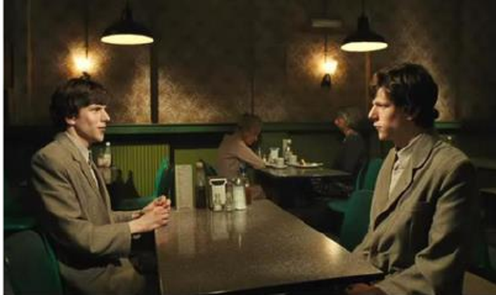
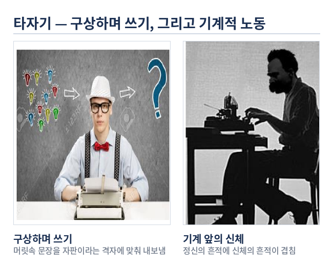

사유가 매체를 만드는 것이 아니라
매체가 사유의 가능 범위를 정함
00이 주차의 위상
- "내 생각을 글로 옮긴다"고 말함. 생각이 먼저 있고, 글이 나중이라는 것.
- 그런데 손글씨 · 타자기 · 워드프로세서 · 음성입력 · AI 자동완성으로 쓴 글은 서로 다름.
- 문체도, 길이도, 구조도, 심지어 무엇을 생각하는지도 다름.
- 직접 확인해 볼 것 — 같은 내용을 손으로 종이에 쓴 것과 휴대폰 메모에 쓴 것을 비교하면, 대개 손글씨가 더 짧고 휴대폰이 더 길고 문어체. 도구가 문장을 바꿨음.
- 1주차 계보는 키틀러를 상징성에 놓음 — 기록·코드·기호 체계를 다루기 때문.
- 그러나 키틀러의 결론은 물질성으로 감 — 하드웨어와 물질로.
- → 이 이중성 자체가 키틀러의 핵심.
01오늘 만날 개념
- 기록체계Aufschreibesysteme
- 한 문화가 데이터를 선택·저장·생산하도록 허용하는 기술과 제도의 총체. 영역본 제목은 Discourse Networks(담론 네트워크).
- 매체 아프리오리media a priori
- 매체가 경험 이전에 이미 경험의 조건을 정한다는 테제.
- 매체고고학media archaeology
- 매체의 역사를 진보의 이야기가 아니라 지층·잔해·잊힌 갈래로 파는 방법.
- 상상계the imaginary
- 라캉. 이미지와 동일시의 차원.
- 상징계the symbolic
- 라캉. 언어와 법의 차원.
- 실재계the real
- 라캉. 언어로 잡히지 않는 차원.
- 거울단계mirror stage
- 아기가 거울 속 자기 모습을 보고 "저것이 나"라고 알아보는(사실은 잘못 아는) 순간.
- 빗금 쳐진 주체$ · barred subject
- 언어에 들어간 대가로 갈라진 채로만 성립하는 주체. 라캉은 S에 빗금을 쳐 $로 씀.
- 아버지의 이름le Nom-du-Père
- 실제 아버지가 아니라 금지하고 질서를 세우는 기능. 프랑스어 nom(이름)과 non(아니오)이 같은 소리.
- 대타자the big Other · 大他者
- 나를 넘어서 이미 있는 언어 · 법 · 제도의 질서.
- 언캐니das Unheimliche · uncanny
- 친숙함과 낯섦이 겹쳐 생기는 공포. 친숙했던 것이 뜻밖의 계기에 되돌아올 때.
- 재귀recursion
- 자기 자신을 다시 호출하는 구조. "자기를 정의하는 데 자기를 씀."
- 모델 붕괴model collapse
- 생성 모델이 자기 출력으로 다시 학습하며 품질이 무너지는 현상.
02키틀러의 세 도발

- "매체가 우리의 상황을 결정한다" 『축음기, 영화, 타자기』의 첫 문장. 인간이 매체를 쓰는 것이 아니라 매체가 인간의 조건을 정함.
- "소프트웨어는 없다" 우리가 소프트웨어라 부르는 것은 결국 전압 차이와 하드웨어의 상태.
- "인문학에서 정신을 몰아내야 한다" 해석학·정신사 대신 기술적 조건을 봐야 함.
키틀러는 독일 정신과학 전통 — 텍스트를 읽고 정신을 해석하는 학문 — 을 정면 공격했음. "괴테의 정신"이 아니라 "괴테가 쓴 펜과 종이와 우편 제도"를 보자는 것.
03프로이트에서 라캉으로
키틀러는 라캉의 삼계를 세 가지 기록 매체에 그대로 대응시킴. 그 대응이 오늘의 정점(08절)이므로, 라캉의 개념이 어디서 왔는지부터 봐야 함.
프로이트의 세 심급
- 원초아(id) — 충동 그 자체. 금지를 모름
- 자아(ego) — 충동과 현실 사이의 조정자
- 초자아(super-ego) — 내면화된 금지. 바깥의 법이 안으로 들어온 것

오이디푸스 콤플렉스 — 금지를 통해 사회로 들어감
- 아이는 어머니를 향한 욕망을 아버지의 금지에 부딪혀 포기
- 포기로 끝나지 않고 그 금지를 자기 안에 들임. 그것이 초자아
- → 사회화란 금지를 내면화하는 절차
- 라캉에게 아버지는 실제 인물이 아니라 기능. 금지하고 질서를 세우는 자리
- 프랑스어 말놀이 — nom(이름)과 non(아니오)이 같은 소리. 이름을 주는 것이 곧 금지하는 것
- 그 질서의 총칭이 대타자(大他者) — 사회 규범, 법, 제도, 관습
- → 아이는 대타자에 따르는 방식으로 사회화
빗금 쳐진 주체

- 데카르트 — 생각하는 내가 먼저 있고, 그 내가 언어를 사용
- 라캉 — 언어가 먼저 있고, 그것이 나에게 자리를 배정
- 그래서 "나"라고 말하는 순간의 나와, 말해지는 나가 갈라짐
- → 주체는 온전한 덩어리가 아니라 빗금 쳐진 주체($)
이름을 생각해 볼 것. 내 이름은 내가 지은 것이 아님. 그런데 나는 평생 그 이름으로 불리고, 그 이름으로 나를 생각함. 바깥에서 온 기호가 나를 규정하는 구조.
04라캉의 삼계 — 상상 · 상징 · 실재
빗금 쳐진 주체가 살아가는 세 겹의 세계. 이 셋이 곧 오늘의 세 매체가 됨.
상상계 — 거울 단계
- 유아가 언어를 배우기 전에 경험하는 주관적 세계. 자기중심적 왜곡
- 분열 — 아기는 아직 자기 신체를 통합적으로 인식하지 못함. 뒤뚱거리고 넘어짐
- 동일시 — 그런데 거울 속 모습은 하나로 완성되어 있음. 거울 이미지 = 나, 엄마 = 나. 타자에 비친 자기 이미지를 자기 것으로 오인
- 실제의 나는 조각나 있는데, 이미지의 나는 통합되어 있음
- 자아는 이 착각 위에 세워짐. 나 = 이미지이고, 그 이미지는 바깥에서 온 것
- 어른이 되어도 끝나지 않음 — 상징계에서 미끄러지는 기표의 의미를 붙들어 자기에게 의미 있게 해석. 여전히 착각이고 오인
- 지금의 거울단계 — 프로필 사진 속의 나는 정돈되어 있음. 실제의 나는 안 그러함. 필터를 거친 얼굴을 보다가 거울 속 얼굴이 낯설어지는 경험
상징계 — 언어와 법
- 기표들이 차이로 관계 맺은 세계. 기표는 실재에 끝내 도달하지 못함
- 오이디푸스 콤플렉스의 형성과 함께 상징계로 진입. 언어를 쓰게 되면서 충동과 실재로부터 떨어져 나옴
- 주체는 언어가 부여한 위치로 설정됨. 스스로 정하는 것이 아니라 객관화되는 것
- 그 대가로 얻는 것 — 타자와의 소통, 언어적 질서, 차이로서의 존재 가치
실재계 — 상징계에 포섭되지 않는 것
- 상징계의 틈. 상징으로 해석되지 않고 논리적 설명이 불가능
- 가짜가 아니라 오히려 너무 진짜여서 말이 안 되는 것
- 유령처럼 엄습. 예기치 않은 시간과 장소에서 상관없어 보이는 계기에 드러남
극심한 고통을 겪은 사람이 "말로 표현할 수가 없다"고 말함. 표현력이 부족해서가 아님. 언어의 격자에 걸리지 않는 것이 있다는 뜻.
- 상상계를 졸업하고 상징계로 가는 것이 아님
- 셋은 평생 동시에 작동. 상징계가 짜놓은 그물에 상상계가 의미를 붙이고, 그 그물에서 빠져나간 것이 실재계로 남음
- → 그래서 세 매체도 서로를 대체하지 않고 공존(08절)
05욕구 · 요구 · 욕망

| 단계 | 내용 |
|---|---|
| 욕구 need | 원초적 충동. 기표와 무관한 자연적 심리 상태. 대상으로 채워짐 — 배고픔 → 밥 |
| 요구 demand | 욕구를 언어로 표현한 것. 그런데 말은 늘 더 많이 말함. 아이가 "물 줘"라고 할 때 그것은 물 요청이면서 동시에 "나를 봐 줘". 라캉 — 모든 요구는 결국 사랑의 요구 |
| 욕망 desire | 언어로 표현되지 못하고 남은 잔여. 요구가 충족되어도 욕구는 만족되지 않는 상태. 결코 채워지지 않음 |
욕망이 작동하는 세 가지 방식
- 욕망하기를 욕망 — 채우는 것이 목적이 아님. 실존적 공허를 견디지 않으려고 계속 욕망함
- 욕망을 위해 금지를 만듦 — 금지가 있어야 "금지 때문에 못 가진다"는 환상이 유지됨. 가질 수 없어서가 아니라, 가질 수 없어야 해서
- 타자의 욕망을 욕망 — 대타자가 원하는 것을 자기가 원하는 것으로 착각. 내 욕망의 출처가 내가 아님
- 추천 시스템은 욕구를 채움. 보고 싶은 것을 줌
- 그런데 다 보고 나면 또 스크롤함
- 욕구는 채워지는데 욕망은 안 채워짐
- 그리고 그 욕망은 대체로 타자의 욕망 — 조회수와 순위가 먼저 원해 준 것
- → 6주차 아도르노의 허위욕구와 대질할 것. 라캉은 "허위"라고 하지 않음. 원래 안 채워지는 것이라고 함
06기록체계란 무엇인가
선택 · 저장 · 생산할 수 있게 하는
기술과 제도의 네트워크.
| 작용 | 1800년 | 지금 |
|---|---|---|
| 선택 | 문학·편지·일기 | 클릭 · 체류시간 · 좌표 |
| 저장 | 인쇄 · 도서관 · 문서고 | 서버 · 로그 · 데이터레이크 |
| 생산 | 교양소설 · 해석학 | 추천 · 프로파일 · 생성문 |
- 알파벳만으로는 부족함. 학교, 교육법, 어머니의 낭독, 우편 제도, 저작권이 함께 있어야 기록체계.
- 지금 적용하면 — 거대언어모델만으로는 기록체계가 아님. 크롤링 관행 + 저작권 판례 + API 요금제 + 프롬프트 문화 + 학교의 사용 규정, 이 전부가 함께 하나의 기록체계를 이룸.
07기록체계 1800과 1900
1800 — 어머니의 목소리
낭만주의 · 괴테 시대- 핵심 기술 — 알파벳 하나. 모든 것이 문자로 번역됨
- 기원의 상 — 어머니가 아이에게 소리 내어 읽어줌. 그래서 "문자 뒤에 목소리가 있다"는 믿음이 생김
- Die Frau — 개별 여성이 아니라 '여성'이라는 이념. 자연·기원·근원의 자리에 놓임
- 정관사에 빗금이 쳐진 여성 — 보편적 단일 존재가 아니라 분열된 복수로 존재
- 쓰기의 주체는 남성. 어머니는 남성 작가에게 자연이자 이상으로서의 뮤즈
- 독서 — 해석학. 문자 뒤의 '정신·의미'를 읽어냄
- 저자 — 창조하는 천재
1900 — 매체가 갈라짐
모더니즘 · 니체 이후- 핵심 기술 — 축음기 · 영화 · 타자기. 매체가 셋으로 갈라짐
- 기원의 상 — 목소리는 축음기에 녹음된 물질적 진동. 뒤에 아무도 없음
- 독서 — 기록의 물질성. 잡음, 결함, 저장 매체 자체를 봄
- 저자 — 타자기 앞의 자료 처리자
- 여성의 자리 — 타이피스트. 자기 말이 아닌 것을 받아 침
- 1800년 — 모든 매체가 문자 하나로 수렴했음. 음악도 악보로, 그림도 묘사로, 목소리도 글로. 그래서 "문자 뒤에 정신이 있다"는 믿음이 가능했음.
- 1900년 — 매체가 갈라졌음. 소리는 축음기가, 움직임은 영화가, 문자는 타자기가 각자 가져감. 문자는 더 이상 전부가 아님. "문자 뒤에 정신이 있다"는 믿음이 깨짐.
- 괴테 『파우스트』에서 파우스트를 끝내 구원하는 쪽은 그레첸
- 작품의 마지막 행 — "영원히 여성적인 것이 우리를 이끌어 올린다."
- 여성은 쓰는 자가 아니라 쓰기가 향하는 기원이자 목적지로 배치됨
- → 알파벳을 가르치는 어머니의 목소리와 같은 구조. 기록체계 1800의 본성이 여성이라는 말의 뜻


- 시력을 잃어가던 니체는 1882년 말링한센 타자기를 샀음.
- 그리고 문체가 바뀌었음. 길고 유려한 문장 → 짧고 단속적인 아포리즘.
- 니체 자신이 썼음 — "우리의 필기 도구가 우리의 사유에 함께 작업한다."
- 키틀러는 이것을 니체적 청산이라 부름 — 문자를 선택하고 의미를 표현하는 일에서, 문자를 배열해 욕구를 드러내는 일로 바뀜
- → 저자의 영향력이 소멸하고 파편적 · 자동적 쓰기가 들어섬
08축음기 · 영화 · 타자기와 삼계
오늘의 정점. 라캉의 세 세계가 1900년의 세 기계에 그대로 대응함.
축음기와 실재계
- 축음기는 음악 재생 장치를 넘어 소리의 기록이자 기억의 대체물
- 소리의 세계에는 소리와 소음이 함께 있음. 소음은 존재를 부정당하면서 존재하는 것
- 악보는 소리를 문자로 기록하는 방식 — 선별된 소리만 남김. 이것이 상징계
- 축음기는 소리와 소음을 동등하게 취급해 같은 방식으로 기록
- → 말도, 기침도, 바늘 긁는 잡음도 똑같이 남음. 실재의 흔적이 드러남

- 프로이트에게 그것은 무의식과의 만남
- 예기치 않은 시간과 장소에서, 상관없다고 여겨지던 계기에 실재가 드러남
- 축음기는 그 구조를 기계로 구현 — 아무도 들으려 하지 않은 것까지 보관해 두었다가 되돌려줌
영화와 상상계
- 영화는 초당 24개의 정지 장면을 편집해 이미지를 생산
- 현실을 스크린에 이미지로 투사 — 실재를 분절하고 몽타주
- 그렇게 절단된 실재는 상상계로 흘러들어감
- 관객은 주인공과 자신을 동일시. 거울단계의 구조가 그대로 반복됨
- 그런데 스크린과 현실 사이에는 틈이 있음 → 주체는 다시 분열된 자아를 인식

도플갱어와 언캐니
- 영화는 자신의 내적 이미지, 곧 무의식의 이미지를 환상으로 스크린에 드러냄
- 그래서 동일화는 즐겁기만 한 과정이 아님 — 보여주고 싶지 않은 모습까지 적나라하게 보여주므로 고통스러움
- 언캐니(uncanny) — 친숙함과 낯섦이 묘하게 결합된 감정. 친숙했던 것이 기억 저편에 있다가 우연한 계기에 돌아올 때의 공포

- 출발은 상상계 — 스크린의 이미지를 나로 알아보는 동일시. 거울단계와 같은 구조
- 그런데 그 이미지가 되돌려 주는 것이 있음. 억압해 두었던 것, 상징계의 그물에 담기지 않아 밀어 둔 것
- → 동일시가 성공하는 바로 그 순간 실재계가 뚫고 들어옴
- 그래서 언캐니는 상상계의 쾌감이 실재계의 공포로 미끄러지는 감정. 낯설어서 무서운 것이 아니라, 친숙해서 무서움
- 7주차 안더스의 팬텀과 비교할 것 — 안더스는 "내가 거기 없음"을 말하고, 라캉·키틀러는 "내가 거기 너무 있음"을 말함
타자기와 상징계
- 타자기는 기계로 글을 쓰는 일. 손이 종이에 닿지 않고, 구상하며 씀
- 상징계란 언어 · 개념 · 규칙의 세계. 타자의 시선, 도덕과 관습의 구속이 있는 곳
- 1800년경 글쓰기를 지배하던 주체와 정신이 해체됨
- 글 쓰는 개인이 해체된 자리에 들어서는 것이 상징계의 지배
- 남는 것은 정신의 흔적 + 기계적 노동을 통한 신체의 흔적
- 1800년의 쓰기에서 배제됐던 여성이 타자수로 등장. 다만 자기 말이 아닌 것을 받아 치는 자리

세 줄로 요약
축음기 = 실재계
거르지 않고 다 담음- 의미를 걸러내지 않음
- 말도 기침도 잡음도 똑같이 기록
- 언어의 격자에 안 걸리는 것까지 보관
영화 = 상상계
조각을 통합으로 보이게 함- 정지된 사진들로 움직임의 환영을 만듦
- 실제로는 조각인데 통합된 것으로 보임
- 거울단계의 구조 그대로
타자기 = 상징계
유한한 격자에 가둠- 연속적 흐름을 끊어 이산적 기호로
- 자판이라는 유한한 격자에 언어를 가둠
- 필체가 사라지고 기호만 남음
- 정신분석의 개념을 기계의 목록으로 번역한 것
- 그래서 그는 말함 — "라캉의 삼계는 1900년의 매체 상황을 이론화한 것에 불과하다."
- 정신이 매체를 설명하는 것이 아니라, 매체가 정신 이론을 만들어냈다는 주장
- → 순서가 뒤집힘. 라캉이 매체를 해석한 것이 아니라, 매체가 라캉을 쓰게 했다는 것
09소프트웨어는 없다
- 우리가 소프트웨어라 부르는 것은 여러 겹의 추상화 층.
- 아래로 내려가면 남는 것은 물리적 상태뿐.
- 그리고 각 추상화 층은 아래층을 은폐함. 사용자는 하드웨어를 볼 수 없음.
- 키틀러 — 이 은폐는 기술적 편의가 아니라 권력의 문제.
| 누구 | 주장 |
|---|---|
| 헤겔 3주 | "매체가 물질성을 벗고 비물질적인 것에서 표명될 때 진정한 매체가 됨." 물질은 걸림돌 |
| 키틀러 오늘 | "소프트웨어는 없음." 비물질처럼 보이는 것은 은폐된 물질 |
정확히 반대. 어느 쪽이 옳은가.
- "무선" 인터넷 — 실제로는 기지국과 해저 케이블 위에 얹혀 있음.
- "서버리스" 컴퓨팅 — 서버가 없는 게 아니라 안 보이는 것.
- "스트리밍" — 흐른다는 말이 데이터센터를 지움.
- "클라우드" — 이름은 헤겔 편이지만 실체는 키틀러 편. 데이터센터, 전력, 냉각수, 해저 케이블.
1주차의 "잘 작동하는 매체는 보이지 않는다"가 여기서 바뀜. 보이지 않는 것은 자연스러워서가 아니라 보이지 않게 설계되었기 때문.
10기록 매체와 담론 체계
심혜련(2024) II부 4장 2절 pp.244~254. 한국어로 된 키틀러 해설의 표준.
- 기록 매체가 담론의 조건 — 무엇을 기록할 수 있느냐가 무엇을 말할 수 있느냐를 정함.
- 매체가 바뀌면 주체의 형태도 바뀜. 저자 → 자료 처리자 → ?
- 디지털에서는 모든 매체가 다시 하나로 수렴함 — 0과 1.
| 시기 | 매체 상황 | 따라오는 믿음 |
|---|---|---|
| 1800 | 알파벳 하나로 수렴 | "문자 뒤에 정신이 있다" |
| 1900 | 매체가 갈라짐 | "정신은 없고 기술만 있다" |
| 2000 | 디지털로 다시 수렴 | "그러면 무엇이 있는가" |
- 축음기 · 영화 · 타자기가 각각 가져갔던 소리 · 이미지 · 사유가 하나의 장치에 통합 기록됨
- 그러면 실재계 · 상상계 · 상징계의 매체적 분업은 어떻게 되는가
- 따라오는 변화 — 기억의 복잡성 증가. 기록하는 능력보다 기록된 것을 빨리 찾아내는 능력이 더 중요해짐
- 이른바 디지털 치매 — 외부에 저장했으므로 안에 담아 둘 이유가 사라짐. 2주차 플라톤의 문자 비판이 여기서 되돌아옴
거대언어모델은 '기록체계 2000'인가
| 차원 | 1800 | 1900 | 2000(?) |
|---|---|---|---|
| 핵심 기술 | 알파벳 | 축음기·영화·타자기 | 거대언어모델 · 데이터센터 · GPU |
| 선택 | 문학이 될 만한 것 | 녹음·촬영 가능한 것 | 크롤링 가능한 것 |
| 저장 | 인쇄·도서관 | 필름·레코드·문서 | 가중치(weights) |
| 생산 | 교양소설, 해석학 | 몽타주, 정신분석 | 생성문, 프롬프트 |
| 기원의 상 | 어머니의 목소리 | 기계의 잡음 | 학습 데이터? |
| 주체의 형태 | 창조하는 저자 | 자료 처리자 | 프롬프터? |
| 제도 | 학교·우편·저작권 | 영화산업·음반산업 | API 요금 · 저작권 소송 · 이용약관 |
- 1800 — 문자는 읽을 수 있게 저장함. 원문이 남음.
- 1900 — 필름은 재생할 수 있게 저장함. 원본이 남음.
- 2000 — 가중치는 원본을 남기지 않음. 학습 데이터는 안에 없고, 그 흔적만 분포로 남음.
- 이것을 '저장'이라 부를 수 있는가. 기억인가, 요약인가, 압축인가. 아니면 완전히 새로운 종류의 기록인가.
- 비유 — 책 1만 권을 읽은 사람의 머릿속에 그 책들이 있는가. 없음. 그런데 그 사람은 책처럼 말할 수 있음. 도서관도 아니고 요약본도 아님.
- 1800에서 문자 뒤에는 살아 있는 목소리가 있다고 믿어졌음.
- 지금 생성문 뒤에는 무엇이 있다고 믿어지는가. "학습 데이터"? 그런데 특정할 수 없음. "인간의 지식 총체"? 이것은 1800의 믿음 구조와 똑같지 않은가.
- 키틀러라면 이렇게 말할 것임 — 생성문 뒤에 아무도 없음. 가중치와 전력만 있음. 그런데 우리는 여전히 뒤에 누군가 있다고 느낌. 그 느낌이 새로운 기록체계의 이데올로기.
11재귀성과 모델 붕괴
변정수(2025) 3부 3장 「재귀 알고리즘과 재귀성」. 부제가 「헤겔에서 인공지능까지」.
- 재귀란 함수가 자기 자신을 호출하는 것.
- 필수 요소 둘 — 기저 조건과 자기 호출. 기저 조건이 없으면 무한 루프.
- 일상의 재귀 — 마주 본 두 거울(기저 조건이 없음), 사전에서 단어를 찾으면 또 다른 단어(2주차 차연), 폴더 안의 폴더.
- 도서관에는 도서관 목록이 있음.
- 문서고에는 문서고 관리 규정이 있음.
- 데이터베이스에는 스키마(데이터에 관한 데이터)가 있음.
- 컴파일러는 자기 자신을 컴파일할 수 있음.
- → 자기지시가 기록체계의 구조적 성질. 15주차 육후이의 재귀성이 여기서 출발함.
모델 붕괴
그것을 학습
- 재귀 — 기저 조건이 있고 수렴함. 자기 호출이 문제를 줄여감.
- 순환 — 기저 조건이 없고 발산·붕괴함. 자기 호출이 오류를 누적함.
- 모델 붕괴에는 기저 조건이 없음. 그래서 재귀가 아니라 순환.
- 스스로 물어볼 것 — 무엇이 기저 조건이 될 수 있는가. "사람이 쓴 원본 데이터"? 그것을 어떻게 식별하는가. 워터마크인가, 출처 증명인가.
- → 11주차 보드리야르 — 원본을 식별하려는 시도는 원본이 없어졌다는 증거인가.
12정리 · 흔한 오해 · 토론
이번 주 개념 다섯
- 기록체계 데이터를 선택·저장·생산하게 하는 기술과 제도의 총체.
- 기록체계 1800 / 1900 알파벳 하나로 수렴한 시대와, 축음기·영화·타자기로 갈라진 시대.
- 라캉의 삼계와 세 매체 실재계=축음기 / 상상계=영화 / 상징계=타자기.
- "소프트웨어는 없다" 비물질처럼 보이는 것은 은폐된 물질.
- 재귀성 / 모델 붕괴 자기를 다시 호출하는 구조와, 자기 출력으로 학습해 무너지는 현상.
흔한 오해 셋
- 교정 — 기록체계는 기술 + 제도.
- 학교·법·관행이 빠지면 키틀러가 아님. 모델만 놓고 "기록체계 2000"이라 하면 절반만 말한 것.
- 교정 — 아님. 추상화가 무엇을 감추는지 보라는 요구.
- 프로그래밍을 부정하는 것이 아니라 그 정치성을 지적하는 것.
- 교정 — 키틀러는 실제로 강한 결정주의로 비판받음.
- 다만 그의 목적은 체념이 아니라 "인간의 자율성이라는 자기상이 어떤 기술적 조건 위에 서 있는지 보라"는 것.
토론 질문
- 거대언어모델은 새로운 기록체계인가.
1800(어머니의 목소리)·1900(타자기·축음기)과 무엇이 다른가. 특히 가중치는 어떤 종류의 저장인가. 원본을 남기지 않는 저장을 저장이라 부를 수 있는가. - "소프트웨어는 없다"를 GPU·전력·데이터센터로 검증하면 어떻게 되는가.
3주차 헤겔과 충돌시켜 볼 것. '클라우드'는 어느 쪽 편인가. - 삼계와 세 매체의 대응을 지금의 매체로 다시 그리면 어떻게 되는가.
실재계는 센서 로그인가 원시 데이터인가. 상상계는 숏폼인가 아바타인가. 상징계는 프롬프트인가 토큰인가. - 모델 붕괴는 재귀인가 순환인가.
기저 조건이 될 수 있는 것은 무엇인가. 그것을 식별할 수 있는가. - 1800의 '어머니의 목소리' 자리에 지금 무엇이 있는가.
생성문 뒤에 누군가 있다고 느끼는 그 느낌은 어디서 오는가. - 키틀러의 "매체가 우리의 상황을 결정한다"는 맥루언의 결정주의와 어떻게 다른가.
맥루언은 감각을, 키틀러는 기록의 물질적 조건을 봄. 맥루언은 낙관적이고 키틀러는 냉담함.
13참고자료
이번 주 읽기
- B 심혜련 (2012). 『20세기의 매체철학』 — 1부 6장
- C 심혜련 (2024). 『21세기의 매체철학』 — II부 4장 2절 pp.244~254 한국어 키틀러 해설의 표준
- D 변정수 (2025). 『알고리즘으로 철학하기』 — 3부 3장
원전
- 프리드리히 키틀러. 『축음기, 영화, 타자기』 — 서문과 「타자기」 장. 니체 대목이 여기 있음
- 프리드리히 키틀러. 「There Is No Software」 짧은 논문. 영문 무료 공개 다수
- 프리드리히 키틀러. 『기록체계 1800/1900』 — 발췌만
라캉 보조 — 학부생용
- 자크 라캉. 「거울단계」 — 『에크리』 수록. 10쪽 남짓. 04절의 원천
- 지크문트 프로이트. 「두려운 낯섦」 언캐니의 원전. 08절
- 요한 볼프강 폰 괴테. 『파우스트』 — 그레첸 대목과 마지막 합창 07절
- 숀 호머. 『라캉 읽기』 / 브루스 핑크. 『라캉의 주체』 삼계 입문용
보조
- Friedrich Kittler — Monoskop 원문 아카이브
- Media archaeology — Monoskop
- 이광석 등 (2016). 『현대 기술-미디어 철학의 갈래들』. 그린비 — 키틀러 장
이어지는 주차
- 13주차 — 빌렘 플루서: 코드와 텔레마틱 사회 연결성
키틀러가 기록을 말했다면, 플루서는 코드로 이어지는 소통 구조를 말함.